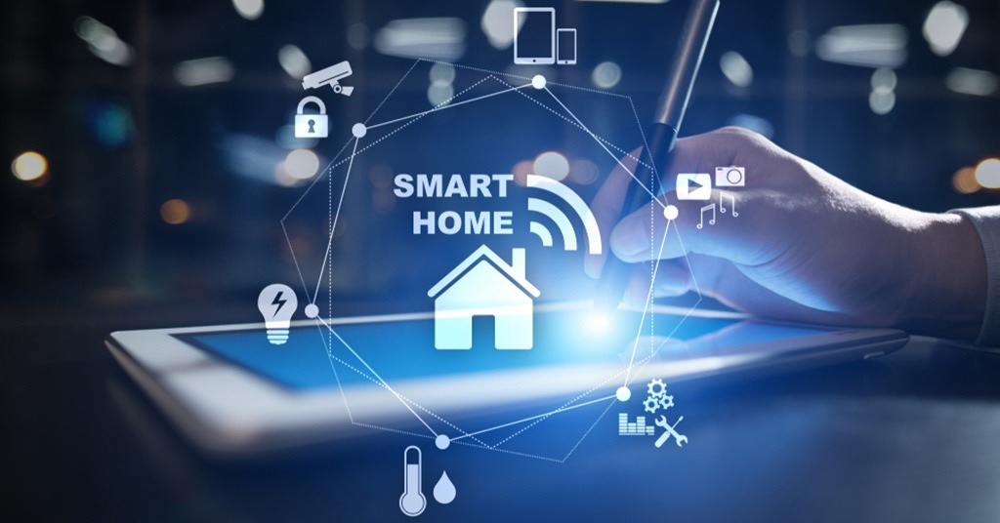
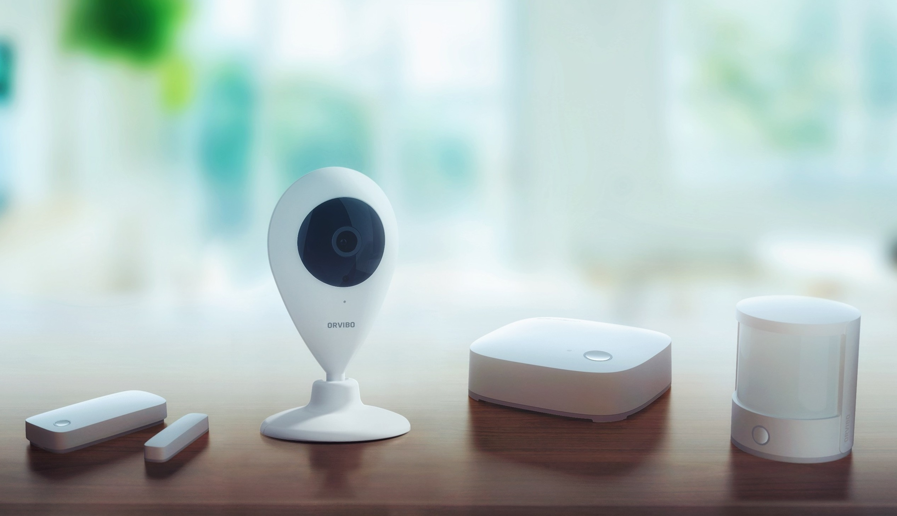
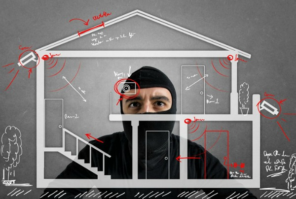
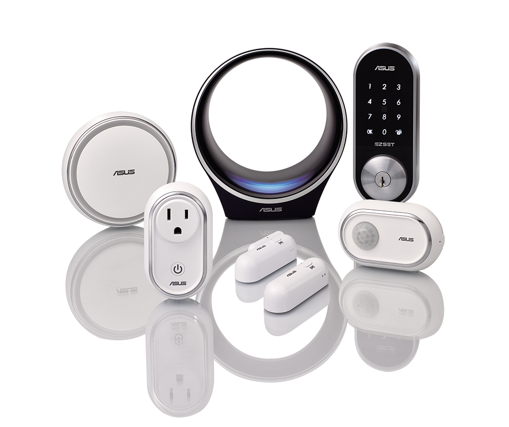

Що таке розумний будинок?
Розумний будинок — це система домашніх пристроїв, здатних виконувати дії і вирішувати певні
повсякденні
завдання без участі людини. Функціонально пов’язуються між собою усі електроприлади будівлі, якими
можна
керувати централізовано — з пульта-дисплею.
Але як захистити розумний будинок? Все дуже просто — встановити систему безпеки.
Система безпеки займає в облаштуванні розумного будинку особливе місце. Вона відповідає не тільки за
безпосередню безпеку об'єкта, а й за інженерні комунікації. Комплекс сповістить про всі позаштатні
ситуації: несанкціоноване проникнення, витік води або газу, відкриття вікон або дверей.

Система безпеки
Системи безпеки складаються з двох основних напрямків - охорона і безпека. Вона в сукупності
складається
зі всіляких охоронних систем та інженерно-технічної безпеки прилеглої території і всього будинку в
цілому. Сучасна система автоматизації будинку включає в себе наступні складові компоненти безпеки:
відеоспостереження, контроль доступу, охорона периметра та пожежна безпека в будинку: датчики
задимлення, пожежогасіння, виклик екстрених служб, а також контроль за інженерними системами
стабілізатор напруги, датчики протікання газу, води.
Можна налаштувати систему оповіщення про тривогу так, щоб вона передавала сигнал на мобільний
телефон
власника або автоматично включалася відеотрансляція подій.
Така система виконує функції з охорони та забезпечення безпеки вашої інтелектуальної власності. Це
найбільш цінний і значущий елемент будь-якого розумного будинку.

Напрям охорони
Основне завдання охоронних систем - запобігання несанкціонованого злому і проникнення в приватну
власність, розкрадання майна, або заподіяння матеріальної шкоди. Велика кількість крадіжок
відбувається
саме в заміських будинках, дачах і котеджах. Багато городян проживають у таких будинках тільки під
час
сезонних відпусток. Досить часто заміські будинки стають привабливою пропозицією для зловмисників.
Однак
розумний будинок здатний дати бій непрошеним відвідувачам.

Напрям безпеки
Системи безпеки для будинку, квартири або дачі можуть також автоматично вмикати сигналізацію і
передавати тривожний сигнал про проникнення або небезпеку на пульт охорони або самому власнику. Для
особистої безпеки і збереження будинку дуже важливою складовою системи безпеки є система
охоронно-пожежної сигналізації, яка не тільки оповіщає про несанкціоноване проникнення в приміщення,
а й
забезпечує своєчасне виявлення джерел загорянь, витоку газу, управління системами оповіщення,
евакуації
та пожежогасіння.

Сигналізація
Усі сучасні системи автоматизації будівель мають сигналізацію. Мало користі з виявлення потенційно
небезпечної ситуації, якщо ніхто, хто може вирішити проблему, не отримає повідомлення про неї.
Повідомлення може здійснюватися через комп’ютер (електронною поштою або текстовим повідомленням),
пейджер , голосовий дзвінок стільникового телефону, звуковий сигнал тривоги та інше.
Температурними сигналізаторами є: простір, припливне повітря, охолоджене водопостачання,
гаряче водопостачання.
Датчики тиску, вологості, біологічних та хімічних речовин можуть визначити, чи вентиляційні
системи вийшли з ладу механічно чи заражені забрудненнями, які впливають на здоров’я людей.
Якщо якийсь механічний пристрій вимагає запуску, і вхід стану вказує, що він вимкнений,
це може означати механічну або електричну несправність.
Деякі приводи клапанів мають кінцеві вимикачі, які вказують, відкрився клапан чи ні.
Датчики чадного газу та вуглекислого газу можуть визначити, чи занадто висока їх концентрація у
повітрі.
Датчики струму можуть бути використані для виявлення слабкострумових станів.
Інформаційна безпека
З урахуванням зростаючого спектру можливостей та підключень до Інтернету речей , системи
автоматизації
будівель неодноразово повідомлялися про вразливість, що дозволяє хакерам та кіберзлочинцям атакувати
їх
компоненти. Хакери можуть експлуатувати будівлі для вимірювання або зміни навколишнього середовища:
датчики дозволяють здійснювати спостереження (наприклад, відстежувати рухи працівників або звички
мешканців), тоді як виконавчі механізми дозволяють виконувати дії в будівлях (наприклад, відкривати
двері або вікна для зловмисників). Кілька постачальників та комітетів почали вдосконалювати функції
захисту своїх продуктів та стандартів, включаючи KNX, ZigBee та BACnet. Однак дослідники
повідомляють
про декілька відкритих проблем у безпеці автоматизації будівель.
Висновки
Невід'ємною частиною системи "розумний будинок" є системи охорони та безпеки.
Сучасні системи безпеки мають безліч можливостей і зручні у використанні для власників будинків.
Отже така система забезпечить розумний будинок від непередбачуваних ситуацій як в плані пожежної
безпеки
так і охоронної, повідомивши вас про ту чи іншу небезпеку в будинку, а також система намагатиметься
сама
ліквідувати небезпечну ситуацію. Це дасть можливість зберегти як будівлю та майно, так і людей, які
перебувають у цій будівлі, в безпеці.
Посилання
Створила студентка ВНТУ групи 2КН-20б - Лишак Альона

 Використані джерела:
Система
розумного будинку — ваш комфорт і безпека
Система
безпеки розумного будинку
Автоматизація
будівель
Розумний
дім
Використані джерела:
Система
розумного будинку — ваш комфорт і безпека
Система
безпеки розумного будинку
Автоматизація
будівель
Розумний
дім
- Посилання на соцмережі: